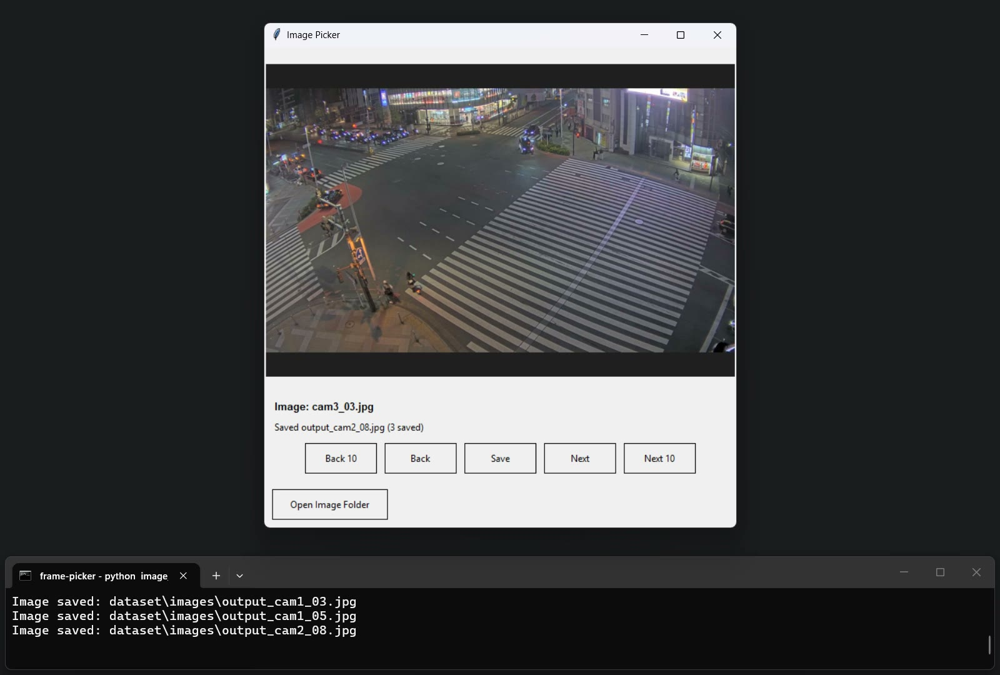

Teclado primeiro
Escolher imagens é repetitivo; com uma tecla por ação, as mãos ficam no teclado e os olhos na imagem.
Todo projeto de visão computacional começa escolhendo imagens. O Video Frame Picker transforma essa tarefa num ritmo de teclado: percorra horas de vídeo em saltos de 40, 200 ou 800 quadros, aperte Espaço nos momentos que valem anotação e depois passe por uma pasta de fotos ficando só com as úteis. Nada para treinar e nada para configurar: abra um vídeo ou uma pasta e comece a escolher.
O seletor de quadros lê o vídeo com o OpenCV e só decodifica o quadro em que você para, então percorrer uma gravação longa continua instantâneo. O quadro salvo é exatamente o que está na tela, na resolução original. O seletor de imagens percorre qualquer pasta de fotos e copia as escolhidas para uma pasta de saída, sem mexer nas originais.



O vídeo e as fotos de exemplo ficam na pasta examples/ do repositório, então a mesma sessão pode ser reproduzida logo após a instalação.
git clone https://github.com/karemdm/video-frame-picker.git
cd video-frame-picker
python3 -m venv .venv
source .venv/bin/activate
pip install -r requirements.txtgit clone https://github.com/karemdm/video-frame-picker.git
cd video-frame-picker
python -m venv .venv
.venv\Scripts\Activate.ps1
pip install -r requirements.txtgit clone https://github.com/karemdm/video-frame-picker.git
cd video-frame-picker
python -m venv .venv
.venv\Scripts\activate.bat
pip install -r requirements.txtpython video_frame_picker.py examples/abbey_road_15s.mp4 --out dataset/framespython image_picker.py examples/street_photos --out dataset/imagesEscolher imagens é repetitivo; com uma tecla por ação, as mãos ficam no teclado e os olhos na imagem.
A navegação salta direto para o quadro de destino em vez de reproduzir o vídeo, então gravações longas continuam responsivas.
O Tkinter vem com o Python, então os únicos pacotes extras são OpenCV e Pillow; roda igual no Windows, macOS e Linux.
Os nomes dos arquivos levam o nome do vídeo e o índice do quadro, o que facilita voltar ao vídeo ou evitar quadros quase iguais.
O seletor de imagens copia, nunca move nem edita, então a pasta de origem continua igual.
A prévia é dimensionada para cada vídeo e mantém a proporção, de vídeos verticais de celular a imagens 4K largas.